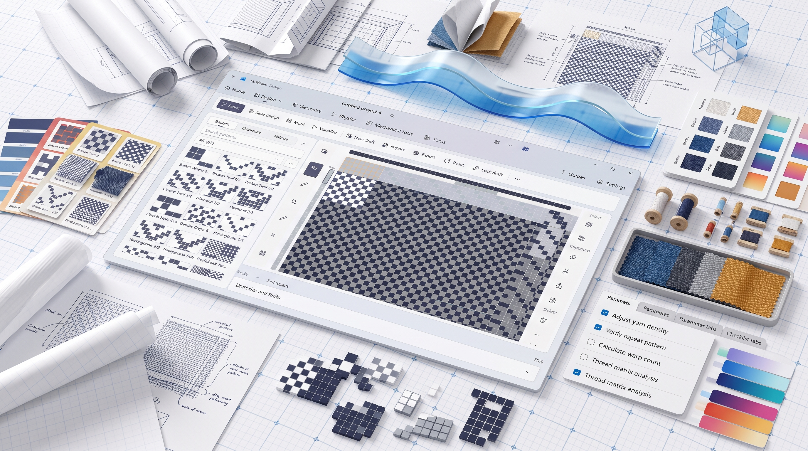

ReWeave User Guide
Complete guide for using ReWeave to design, preview, and simulate fabrics.
Table of Contents
- Overview
- Step-by-Step Tutorials
- Main Sections
- Weave Design
- 2D & 3D Simulation
- Model Builder
- Export & Analysis
- Settings & Preferences
- FAQs
Overview
ReWeave is a comprehensive fabric simulation tool designed for textile professionals and researchers. It enables:
- Design custom weave patterns with an infinite canvas
- Preview 2D yarn interlacing with realistic visualization
- Simulate 3D fabric geometry using academic yarn path models
- Analyze fabric properties and physics
- Export designs in multiple formats
System Requirements
- OS: Windows 10 (Build 1809) or Windows 11
- Architecture: x86, x64, or ARM64
- Display: 1080p or higher recommended
- RAM: 4GB minimum (8GB recommended)
Step-by-Step Tutorials
Tutorial 1: Getting Started (10 minutes)
Goal: Create and save your first fabric project
Steps:
Launch the Application
- Click the ReWeave icon on desktop or Start menu
- Wait for the app to load (first launch may take 30 seconds)
- You'll see the Home page with recent projects
Create a New Project
- Click the "New Project" button in the center
- Or use menu: File → New (Ctrl+N)
- A new blank project opens automatically
Save Your Project
- Click File → Save (Ctrl+S)
- Choose a location (default:
Documents/ReWeave Projects/) - Enter project name: "My First Fabric"
- Click Save
- Notice the title bar now shows your project name
Explore the Interface
- Left Sidebar: Navigation between pages (Home, Weave Design, Fabric Physics, etc.)
- Top Menu Bar: File, Edit, View, Tools, Help menus
- Right Panel: Properties and settings for current section
- Canvas Area: Main editing area (center)
Optional: Enable Auto-Save
- Go to Settings (Ctrl+Comma)
- Find "Backup & Recovery"
- Check "Enable Auto-Save"
- Set interval to "Every 5 minutes"
- Click Apply
✓ You've created your first project!
Tutorial 2: Design a Weave Pattern (15 minutes)
Goal: Create a custom weave pattern using the interactive designer
Steps:
Open Weave Design Page
- Click Weave Design in the left sidebar
- You see the canvas grid and design tools
Choose a Starting Point
Option A - Start from Template (Recommended for beginners):
- Click the Patterns button in top toolbar
- Select "Plain Weave 1/1" from the list
- Click Load Pattern
- A basic weave pattern appears on the canvas
Option B - Start Blank:
- Set grid size in the toolbar
- Enter Width: 8 and Height: 8 (for a simple 8×8 weave)
- Click Create Grid
Understand the Grid
- Warp (vertical threads): Columns
- Weft (horizontal threads): Rows
- Click a cell: Toggle whether warp crosses over weft (black) or under (white)
- Current weave: Shows the draft pattern
Modify the Pattern
- Click several cells to create a different pattern (e.g., twill)
- Watch the pattern change in real-time
- Right-click a cell to see options (undo, flip, etc.)
Set Thread Properties
- In the right panel, find Yarn Properties
- Set Thread Count: 20 ends/cm, 20 picks/cm
- Set Denier: 150 (medium yarn thickness)
- Set Fiber Type: Cotton (affects simulation)
Add Colors (Optional)
- Click Colors in toolbar
- Select colors for warp and weft
- Click cells while color mode is active to paint the weave
- Creates a colored weave pattern
Save Your Weave Design
- Go to File → Save (Ctrl+S)
- Your design is saved to the current project
✓ You've created your first weave pattern!
Tutorial 3: Preview Weave in 2D (10 minutes)
Goal: See how your weave looks with realistic yarn visualization
Steps:
Navigate to Fabric Physics
- Click Fabric Physics in the left sidebar
- You see tabs for "2D Simulation" and "3D Simulation"
- Click the 2D Simulation tab
Load Your Weave
- The system automatically loads your weave from Weave Design
- You see your weave pattern with yarn represented as ovals
Understand the 2D View
- Warp Yarns: Vertical ovals showing how they interlace
- Weft Yarns: Horizontal ovals
- Colors: Reflect the colors you set in Weave Design
- Density: Number of ends/cm and picks/cm shown in title
Adjust 2D Parameters
- In the right panel, find Yarn Parameters
- Change Yarn Diameter: From 0.5 mm to 0.8 mm
- Watch the visualization update - yarns get thicker
- Try Fiber Roughness: Increase it to see texture effects
Pan, Zoom, and Rotate
- Zoom: Mouse scroll wheel to zoom in/out
- Pan: Middle mouse button + drag to move view
- Reset View: Click Reset button in toolbar
- Fullscreen: Press F11 to maximize the view
Export the 2D View
- Click Export button
- Choose "Screenshot (PNG)"
- The 2D view is saved as PNG image
✓ You've previewed your weave in 2D!
Tutorial 4: Run 3D Simulation (15 minutes)
Goal: Simulate fabric 3D geometry and see how it drapes
Steps:
Open 3D Simulation
- In Fabric Physics page, click 3D Simulation tab
- A 3D viewport appears with your weave structure
Choose a Physics Model
- In the right panel, find Yarn Path Model
- Drop-down shows options:
- Peirce Elliptical - Most common, classical model (recommended for beginners)
- Peirce Parabolic - Sharper yarn peaks
- Fourier Series - Harmonic representation
- Bézier Curves - Smooth interpolation
- Others available (Kemp, Hearle, etc.)
- Select Peirce Elliptical
Understand the 3D View
- Warp yarns: Run vertically through the fabric
- Weft yarns: Run horizontally
- 3D paths: Show realistic yarn interlacing
- Geometry: Automatically calculated from physics model
Configure Simulation Parameters
- Find Solver Type: Choose "XPBD" (faster, real-time)
- Set Iterations: 10 (higher = more accurate but slower)
- Set Time Step: 0.016 (default, 60 FPS)
- Leave other parameters at defaults for now
Run the Simulation
- Click Run Simulation button (or press Space)
- The fabric is simulated, yarns adjust to physics
- Watch the simulation progress bar
- Once complete, you see the final 3D geometry
Interact with the 3D Model
- Rotate: Right-click + drag to rotate
- Pan: Middle-click + drag to move
- Zoom: Mouse scroll to zoom in/out
- Reset: Click Reset Camera button
- Orthographic Views: Press:
- 7 for top view
- 1 for front view
- 3 for right view
- 0 for isometric view
Change Visualization
- Find Display Options
- Toggle:
- Show Warp Yarns (on/off)
- Show Weft Yarns (on/off)
- Show Mesh (on/off)
- Wireframe Mode (see internal structure)
Export the 3D Model
- Click Export in toolbar
- Choose format:
- OBJ - For 3D printing or CAD
- STL - For 3D printing
- PNG - Screenshot of current view
- Select save location and format options
✓ You've completed a 3D fabric simulation!
Tutorial 5: Analyze Fabric Properties (10 minutes)
Goal: View calculated fabric properties and metrics
Steps:
Open Fabric Analysis Page
- Click Fabric Analysis in the left sidebar
- You see various calculated properties displayed
View Calculated Properties
- Coverage Factor: Percentage of fabric covered by yarns
- Crimp Percentage: Waviness in warp/weft (%)
- Thickness: Estimated fabric thickness (mm)
- Density: Yarn count and fabric density
- Porosity: Air gaps in the fabric (%)
- Weight: Calculated per square meter (g/m²)
Understand the Analysis
- Properties are automatically calculated from:
- Your weave pattern
- Yarn properties (denier, diameter)
- Physics simulation results
- These values help predict fabric behavior
- Properties are automatically calculated from:
Compare Properties
- If you've saved multiple designs, click Compare tab
- Load a second design to compare
- See side-by-side property comparison
Export Analysis Report
- Click Export Report button
- Choose format:
- PDF - Professional report format
- CSV - Spreadsheet data
- JSON - Raw data for analysis
- Report includes all calculated properties
✓ You've analyzed fabric properties!
Tutorial 6: Use Model Builder for Custom Models (20 minutes)
Goal: Create a custom yarn path model using the visual editor
Steps:
Open Model Builder
- Click Model Builder in the left sidebar
- You see the model editor interface
Create a New Model
- Click Create Model button
- Choose "Start from Blank"
- A new model workspace opens
Add Input Parameters
- In the left panel, find Inputs
- Click Add Parameter
- Create parameter: Name = "u", Type = "Real", Min = 0, Max = 1
- This represents the position along the yarn (0 to 1)
- Click Add Parameter again
- Create parameter: Name = "amplitude", Type = "Real", Min = 0, Max = 1
- This controls yarn wave height
Define the Yarn Path Equation
- Find the Equations panel
- Click Add Equation
- Name the output: "x" (horizontal position)
- Write equation:
u(yarn moves horizontally as u changes) - Click Save Equation
Add More Equations
- Click Add Equation again
- Name output: "z" (vertical position)
- Write equation:
amplitude * sin(3.14159 * u)(creates a wave) - This creates the classic sinusoidal yarn path
Test the Model
- Click Test Model button
- A preview shows your yarn path
- Adjust amplitude slider to see it change
- The yarn should form a wave pattern
Use AI Assistance (Optional)
- Click AI Suggest button
- Describe what you want: "Create a catenary yarn path"
- AI suggests equation:
amplitude * cosh(frequency * u) - amplitude - Review the suggestion and click Accept to use it
Publish Your Model
- Once satisfied, click Publish Model
- Give it a name: "My Wave Model"
- Add description: "Custom sinusoidal yarn path"
- Click Save to Library
- Your model is now available in the physics models list!
✓ You've created a custom physics model!
Tutorial 7: Export Your Work (10 minutes)
Goal: Export your designs in various formats for different uses
Steps:
Basic Export
- Go to File → Export (Ctrl+E)
- Choose your export format:
Export Weave Design (SVG)
- Select format: SVG (2D Weave Draft)
- Shows the weave pattern as scalable vector
- Great for sharing or printing
- Choose save location
- Click Export
Export 3D Model (OBJ)
- Select format: OBJ (3D Mesh)
- This exports the 3D geometry as 3D model file
- Can be opened in:
- 3D printing software (Cura, Prusaslicer)
- CAD software (FreeCAD, Fusion 360)
- Game engines (Unity, Unreal)
- Choose save location
- Click Export
Export for 3D Printing (STL)
- Select format: STL (3D Print)
- Binary STL format (compact, efficient)
- Optimized for 3D printing
- Choose save location
- Click Export
Export Analysis Data (CSV)
- Select format: CSV (Analysis Data)
- Exports all calculated properties as spreadsheet
- Open with Excel or Google Sheets
- Great for data analysis or reporting
- Choose save location
- Click Export
Batch Export (If designed for loom)
- Select format: WIF (Weave Interchange Format)
- Export to loom control software
- Choose save location
- Click Export
Check Export Settings
- Before exporting, you can configure:
- Resolution: For image exports (DPI)
- Color Space: RGB, CMYK, Grayscale
- Compression: Quality level
- Adjust these in Export Settings if needed
- Before exporting, you can configure:
✓ You've exported your designs in multiple formats!
Tutorial 8: Save and Manage Projects (10 minutes)
Goal: Properly save, organize, and recover your work
Steps:
Save Current Project
- Click File → Save (Ctrl+S)
- Project saved to your current location
- Title bar shows project name
Save As (Create New Version)
- Click File → Save As
- Enter new name: "My Fabric v2"
- Keep the old version intact
- New version is now active
Auto-Save Configuration
- Go to Settings (Ctrl+,)
- Find Backup & Recovery section
- Enable Auto-Save
- Set frequency: "Every 5 minutes"
- Changes are now automatically saved
- Click Apply
Create Manual Backup
- Go to File → Backup
- Choose backup location (external drive, cloud, etc.)
- A complete copy of your project is created
- Great before making major changes
Open Recent Projects
- Click File → Recent Files
- You see list of recently opened projects
- Click one to open it quickly
Recover from Crash
- If app crashes, it shows recovery dialog on restart
- Choose Recover to restore last saved state
- Your work is preserved
Organize Project Folder
- Go to File → Open Folder
- Navigate to
Documents/ReWeave Projects/ - You can:
- Create subfolders for different projects
- Rename project files
- Copy/backup important files
✓ You've learned project management!
Tutorial 9: Configure Settings and Preferences (10 minutes)
Goal: Customize the app to your preferences
Steps:
Open Settings
- Click Settings in the menu or press Ctrl+Comma
- Settings window opens with tabs
Appearance Settings
- Find Theme dropdown
- Choose: Light, Dark, or Auto (follows Windows settings)
- Toggle Mica Backdrop on/off (pretty background effect)
- Set Font Size: Default or increase for larger text
- Click Apply
Physics Defaults
- Find Default Physics Model
- Select your preferred yarn model (e.g., Peirce Elliptical)
- Set Default Solver: XPBD for speed, Shell for accuracy
- Set Default Iterations: 10-20 (higher = better quality)
- Click Apply
Performance Settings
- Find GPU Acceleration
- Enable for faster simulations (if you have dedicated graphics)
- Set Particle Count Threshold: Leave at default (50,000)
- Click Apply
Material Library
- Find Material Settings
- View available materials: Cotton, Silk, Polyester, Wool, etc.
- For each material, you see:
- Density
- Stiffness
- Damping
- These affect simulation behavior
AI Assistant Settings (Optional)
- Find AI Assistant
- Choose Provider:
- Offline - Free, no internet needed (basic suggestions)
- OpenAI - More advanced, requires API key
- Ollama - Local LLM (advanced, requires setup)
- Set Temperature: 0.5 (conservative) to 1.0 (creative)
- Click Apply
Advanced Settings
- Find Advanced tab
- Debug Logging: Enable if troubleshooting
- Memory Limit: Set maximum RAM usage
- Precision: Balance between speed and accuracy
- Click Apply
Save and Close
- Click OK to save all changes
- Settings are remembered for next session
✓ You've configured your preferences!
Tutorial 10: Complete Workflow (60 minutes)
Goal: Complete an entire fabric design from start to export
Steps:
Start New Project (5 minutes)
- Launch app or create new project (Ctrl+N)
- Save as "Cotton Twill Project" (Ctrl+S)
Design Weave (15 minutes)
- Go to Weave Design
- Load "Twill 2/2" pattern template
- Customize:
- Set thread count: 25 ends/cm, 25 picks/cm
- Set denier: 120 (fine cotton yarn)
- Set fiber type: Cotton
- Apply colors: Red warp, White weft
- Save design
Preview 2D (5 minutes)
- Go to Fabric Physics → 2D Simulation
- View your weave with realistic yarn visualization
- Adjust yarn diameter if needed
- Take screenshot for reference
Run 3D Simulation (10 minutes)
- Go to Fabric Physics → 3D Simulation
- Choose model: Peirce Elliptical
- Set iterations: 15 (good quality)
- Run simulation
- Explore the 3D model by rotating and zooming
Analyze Properties (5 minutes)
- Go to Fabric Analysis
- Review calculated properties:
- Coverage factor
- Crimp percentage
- Thickness
- Weight
- Export analysis as CSV for records
Create Custom Model (10 minutes)
- Go to Model Builder
- Create a variant of your yarn model
- Add slight modifications to amplitude
- Test and publish as new model
Export Results (10 minutes)
- Export as:
- SVG (weave draft for records)
- OBJ (3D model for CAD)
- PNG (screenshot for sharing)
- CSV (data for analysis)
- Export as:
Final Save (5 minutes)
- Make sure everything is saved (Ctrl+S)
- Create backup: File → Backup
- Save backup to external drive
✓ You've completed a full fabric design workflow!
Main Sections
1. Home Page
The Home Page provides quick access to:
- Recent Projects — Open previously saved projects
- Quick Start — Template-based project creation
- Feature Overview — Information about app capabilities
- Links — Access to GitHub repository and producer portfolio
Navigation: Click "Home" in the sidebar or use the navigation menu.
2. Weave Design
Design custom weave patterns using the interactive weave designer.
Starting a New Weave
- Click Weave Design in the sidebar
- Choose creation method:
- Blank Canvas — Start from scratch
- Built-in Patterns — Select from 27 pre-made patterns:
- Plain weave, twills (2/2, 3/1, etc.)
- Satins (4-harness, 5-harness, etc.)
- Ribs, honeycomb, waffle, huckaback, and more
- Import from File — Load existing weave specifications
Design Features
Canvas Controls:
- Pan: Click and drag with middle mouse button
- Zoom: Mouse scroll wheel
- Reset: Button in toolbar
Grid Editing:
- Click cells to toggle warp/weft intersection
- Use color to distinguish different yarn systems
- Accent warp and transparent weft tiles available
Color Management:
- Define color repeats independently for warp and weft
- Use color library or create custom swatches
- Save color presets for reuse
Weave Grid Properties
- Width/Height: Number of ends and picks
- Pattern Repeat: Smallest repeating unit
- Thread Count: Ends per cm, picks per cm
- Yarn Properties: Denier, linear density
3. Fabric Physics Page
Advanced fabric physics simulation and analysis.
Physics Modes
2D Simulation
- Continuous yarn ovals with fiber roughness
- Density calculations in ends/cm
- Yarn interlacing preview
- Real-time parameter adjustment
3D Simulation
- Multiple yarn path models:
- Peirce Model — Classical geometric model
- Kemp Model — Semi-empirical approach
- Fourier Model — Harmonic representation
- Bézier Model — Smooth curve interpolation
- Backer Model — Wave-based geometry
- Olofsson Model — Advanced parametric model
- Fabric deformation under load
- Stress/strain analysis
- Interactive viewport with rotation and zoom
- Multiple yarn path models:
Physics Parameters
Yarn Properties:
- Cross-section shape (oval, round, ribbon)
- Denier (thickness)
- Linear density (g/cm)
- Fiber roughness
Fabric Properties:
- Thread density (ends/cm, picks/cm)
- Interlacing pattern
- Thickness
- Coverage factor
Simulation Settings:
- Solver type (FEA, particle-based)
- Time step
- Convergence tolerance
- Material properties
Export Results
- Geometry Data — 3D mesh coordinates
- Property Report — Calculated fabric properties
- Visualization — Screenshots and animations
4. Model Builder
Create custom geometry models for fabric simulation using visual programming.
Getting Started with Models
- Open Model Builder tab
- Choose:
- Create from Template — Start with predefined model
- Create Blank — Build from scratch
- Use the visual editor to define equations
Building Models
Components:
- Input Parameters — User-configurable values
- Governing Equations — Mathematical relationships
- Output Results — Calculated values
Workflow:
- Define input parameters (drag parameter blocks)
- Write governing equations using:
- Mathematical operators (+, -, *, /, ^)
- Trigonometric functions (sin, cos, tan, etc.)
- Built-in constants (π, e, etc.)
- Connect equations to outputs
- Test with sample values
- Save as publishable package
AI Assistance:
- Use AI Suggest to get equation recommendations
- Request equation explanations
- Get validation feedback
- View suggested parameter ranges
Publishing Models
- Validate all equations
- Set parameter presets
- Configure viewer controls (if exporting UI)
- Publish as package
- Share with other users
5. Fabric Analysis Page
Analyze and compare fabric properties.
Analysis Features
- Property Calculation — Automatic computation from parameters
- Comparison Tools — Side-by-side property comparison
- Export Reports — Generate analysis documents
- Visualization — Graphs and charts of properties
Available Properties
- Coverage factor
- Crimp percentage
- Thickness
- Density
- Porosity
- Air permeability (calculated)
- Tensile strength (estimated)
6. Export & Output
Export Formats
Weave Specification
.weaveformat (project file)- SVG for 2D designs
- PDF for printing
3D Geometry
.obj— 3D mesh model.fbx— Game engine format.step— CAD format
Data Export
.csv— Property tables.json— Complete project data.xml— Structured report
Export Settings
- Resolution (DPI for images)
- File format options
- Compression levels
- Color space (RGB, CMYK)
- Include metadata
7. Settings & Preferences
Application Settings
Appearance:
- Theme (Light, Dark, Auto)
- Mica backdrop effects (enabled/disabled)
- Font size
- Color scheme customization
Physics:
- Default solver
- FEA parameters
- Simulation time step
- Convergence criteria
Export:
- Default export format
- Default location
- File naming conventions
Advanced:
- Recovery autosave interval
- Calculation precision
- Memory limits
- Debug logging
Keyboard Shortcuts
| Shortcut | Action |
|---|---|
| Ctrl+N | New project |
| Ctrl+O | Open project |
| Ctrl+S | Save project |
| Ctrl+E | Export |
| Ctrl+Q | Quit application |
| F5 | Run simulation |
| F11 | Toggle fullscreen |
| Ctrl+, | Open settings |
FAQs
Q: How do I start a new weave design?
A: Click "Weave Design" → "New" → Select "Blank Canvas" or choose from templates.
Q: Can I import weave patterns from other software?
A: Yes. Use the import feature in Weave Design and select a compatible weave file format.
Q: What's the difference between 2D and 3D simulation?
A: 2D shows yarn cross-sections in the weave plane. 3D shows full 3D geometry with yarn paths and fabric structure.
Q: How do I export my design?
A: Go to File → Export, choose format, configure settings, and select save location.
Q: Can I use my own yarn properties?
A: Yes. In Fabric Physics, define custom yarn parameters (denier, density, roughness, etc.).
Q: Is there a way to batch process multiple projects?
A: Currently, you must process projects individually. Batch processing is planned for a future release.
Q: How do I publish custom geometry models?
A: Use Model Builder → Create/Edit Model → Validate → Publish as Package. See Model Builder section for details.
Q: What file formats are supported for import?
A: .weave, .asc, .dup (Jacquard formats), and standard image formats for color sampling.
Q: Can I undo changes during design?
A: Yes. Use Ctrl+Z (or Edit → Undo). Multiple undo levels are supported.
Q: How do I share my projects with colleagues?
A: Export as .weave file or save with all dependencies. Share the file via email or file sharing service.
Support & Feedback
For issues, feature requests, or feedback:
- Visit the GitHub Repository
- Check Documentation
- Review Troubleshooting Guide